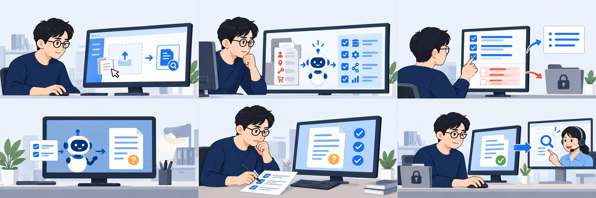

해결 솔루션 / 유저 플로우
서비스로 달라진 문의 준비 · 가상 시나리오
“공급사 문의 자료를 준비하자.”1 SafeHandoff에서 문의를 시작한다
목적은 ‘첫 요청 처리 확인’. 원본 로그는 사내 작업 공간에 둔다.
“필요한 단서부터 살펴보자.”
2 AI가 제안한 조사 단서를 살핀다
서비스가 요청 ID·응답 순서와 민감 정보를 나눠 보여준다.
“요청 ID와 응답 순서는 필요해.”
3 지훈이 공개할 사실을 고른다
op_demo_101과 시도별 응답은 남기고, 민감 정보는 공개 범위에서 제외한다.
승인한 사실로 새 문의문 작성
4 사내 AI가 문의문을 새로 쓴다
승인한 사실로 작성하고, 첫 요청의 처리 완료·중복 생성 여부는 미확인으로 남긴다.
“빠진 단서나 민감 정보는 없나?”
5 지훈이 초안을 최종 확인한다
AI가 승인 사실과 대조한 초안을 보고, 지훈이 단서와 공개 범위를 확인한다.
“이 요청 ID로 기록을 확인할게요.”
6 공급사가 요청 기록을 확인한다
지훈이 확정본만 직접 공유하자, 공급사는 요청 ID를 기준으로 조사에 착수한다.
가상 사용 시나리오를 설명하는 그림이며 실제 모델 실행·외부 발송 결과가 아닙니다.